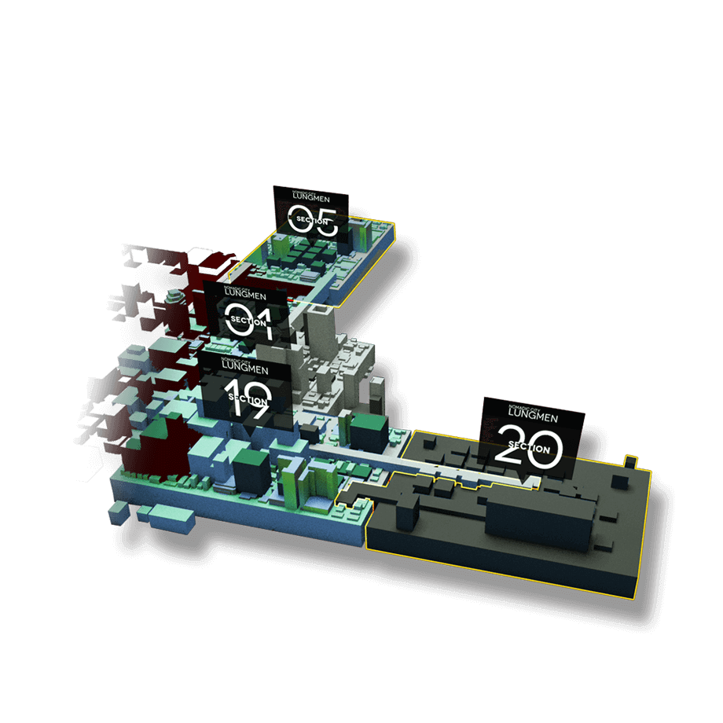

《明日方舟》的故事发生在一个架空世界“泰拉”中。这里有着与地球相似而又截然不同的环境，历史和文明。
源石技术相关
天灾
在泰拉世界频繁发生的各种自然灾害的统称。表现为各种自然灾害的巨大灾难（包含暴风、雪灾、强降雨、洪水甚至陨石坠落）。此现象发生频率非常高，规律也难以捉摸。天灾过后往往会留下一种叫做源石的矿物。一种自然界能量结晶形成的神秘矿石。源石的开发让文明进入了现代，建立起了以源石为基础的科技体系。
源石（Originiums）自然界普遍存在的黑色半透明晶体矿物，经常于被天灾席卷后的土地出现。其本身蕴含巨大的能量，是引发天灾的首要因素。依赖于技术的进步，源石蕴含的能量投入工业后使得文明顺利迈入现代，与此同时，源石本身也催生出“感染者”的存在。 |

|

|
源石技艺（Originium Arts）源石被发现之后，人们发掘出一种通过它来施放一系列令物质改变原有性状的技术，这种技术被称为源石技艺，常被俗称为“法术”。源石技艺所运用的能源，一般被认为来自于源石本身，若没有源石辅助，法术使用效率会大幅下降。而人是否能施放法术，以及所能施放法术的形式、强度、效果等，通常受到先天具备的素质、后天对源石技艺的学习能力这两方面因素的制约。 |
矿石病（Oripathy）长期接触源石及其工业衍生品后，会使人容易得到名为矿石病的不治之症，此病会增强人的法术使用能力，矿石病患者不需要法杖就可以施放法术。但却会在患者使用法术的过程中不断扩大感染。 染上矿石病的人普遍被称为感染者，这些人的血液中具有较高浓度的源石颗粒，严重者的体细胞会与源石融合，并在体表长出源石结晶。感染者死亡后，尸体存在扩散传染性。 由于矿石病在长期研究下仍然没有治愈方法，各国遂以隔离驱逐甚至杀害的残忍手段消极应付。长久以来，没人告诉他们该如何渡过余生，如今伴随着一位颠覆者的出现，越来越多的感染者被纳入一场名为“整合运动”的反抗浪潮。 |

|
|  |
移动城邦（Nomadic City）建造在可移动设备上的城市。频繁发生且破坏力巨大的天灾，迫使几乎所有的国家，都需要采用定期迁移家园与聚落的方式进行躲避。而移动城市，正是在这种需求下慢慢诞生的。人们在迁徙的过程中，尝试将建筑和种种装置安设在移动设备之上，并不断地扩大载具的规模。在文明与技术的演变之下，人们最终创造出了十分庞大的移动城市。 |
团体
罗德岛（Rhodes Island）玩家方团体，为聘用了包含感染者成员在内，对外注册为制药公司的组织。但事实上却拥有完整独立武装力量、天灾应急对策、矿石感染研究与检疫手段，并经常出入受天灾影响的高危险地区处理争端，在距离注册时间不远的现今，已成功解决了数起感染者引发的事件。如今因为涉入切尔诺伯格事变，而与史上最大的感染者组织整合运动展开战争。 名称可能取材于现实世界的医院骑士团。 |

|
|  |
龙门近卫局（Lungmen Guard Department/L.G.D.）龙门警备力量与安全部门的结合体，集中、无情、但是有效，尤其是面对天灾带来的感染者泛滥问题上。古老森严的等级制度与稳定的选拔考核确保着它能够保持着稳定的同时接纳新鲜血液，保护着龙门这艘孤舟穿行在诸国之间不受外敌与天灾的侵害。 设计可能取材于现实中的香港警务处。 |
整合运动（Reunion）原本为一无所事事的感染者团体，但在塔露拉成为新首领之后便脱胎换骨，变成了无种族立场，极端排外的感染者组织。他们宣称“感染者应对自己的身份感到骄傲，积极去获取并使用属于自己的力量”。试图用最原始的手段去争夺世界的公正。以某座被摧毁的伟大城市为开端，医疗机构“罗德岛”的突然介入，令整个事态向着未知发展。 |

|
企鹅物流（Penguin Logistics）以龙门为核心据点的跨国物流公司。表面上仅仅经营正常货物运输，但私底下却有像是情报贩卖、武装押运等游走于法律边缘的业务，甚至还传出委托人与商品一同消失的传闻。然而凭借著准时、低货损率、私人武装与可靠的运送管道，各政治势力都对其睁一只眼闭一只眼，因此在多国戒严的现状下几乎独占整个产业。 |
莱茵生命实验室（Rhine Lab）宗旨为“Solve Intelligence, Think Different.”（解析智慧，另类思考。） 是一家位于哥伦比亚，致力于生命科学、化学制造、生物应用等领域技术的公司，已公开的诸多成果皆已成为业界瞩目焦点。据媒体消息，在过去一段时间内，莱茵生命一些秘密项目开始扩大招募规模并引起军方资源介入，相关人士猜测这些项目与源石在生物体上的实验有关。 |
黑钢国际（Black Steel）私人安全顾问公司，安保范围除了常见的武装力量，也包括处理灾后后勤与源石相关对策的生化防护相应人员（B.P.R.S）。初始成员大多为哥伦比亚（游戏内）独立战争时期的退役老兵，战后重组为雇佣兵组织，并受雇于哥伦比亚政府与企业，但经历巴伦矿场事变之后，便积极开展国际业务，最终成为现今的黑钢。 名称可能取材于现实世界的私人安全顾问公司黑水国际。 |
乌萨斯学生自治团(URSUS student self-government group)切尔诺伯格的学生自治联合社团，现有剧情中一共登陆五名角色，均为切城当地某中学就读的学生。在切尔诺伯格城陷落，整合运动对整个城市展开大清洗期间，游戏角色凛冬聚集了部分生还学生，以“学生自治团”的名义进行自卫、援助和逃亡行动。在经历了一系列冒险后，这支学生自治团投奔了罗德岛。 |
国家